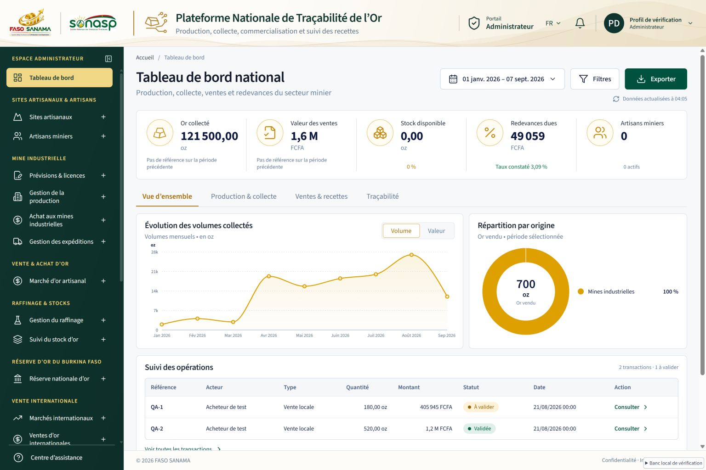
Administrateur
Vert profond et or
12 portails visuels · 15 contextes · 7 septembre 2026
Vrais composants de l’application, données de test isolées. Aucune écriture en production.

Vert profond et or
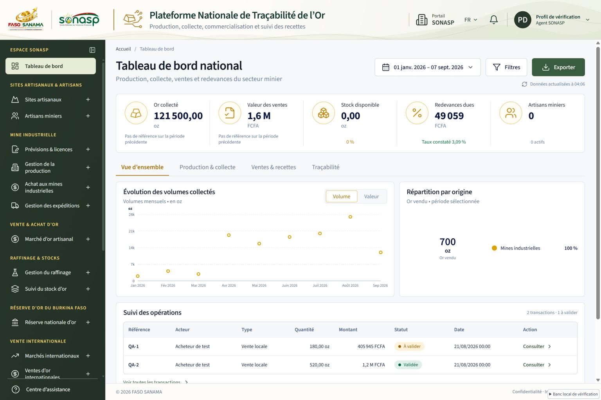
Vert olive
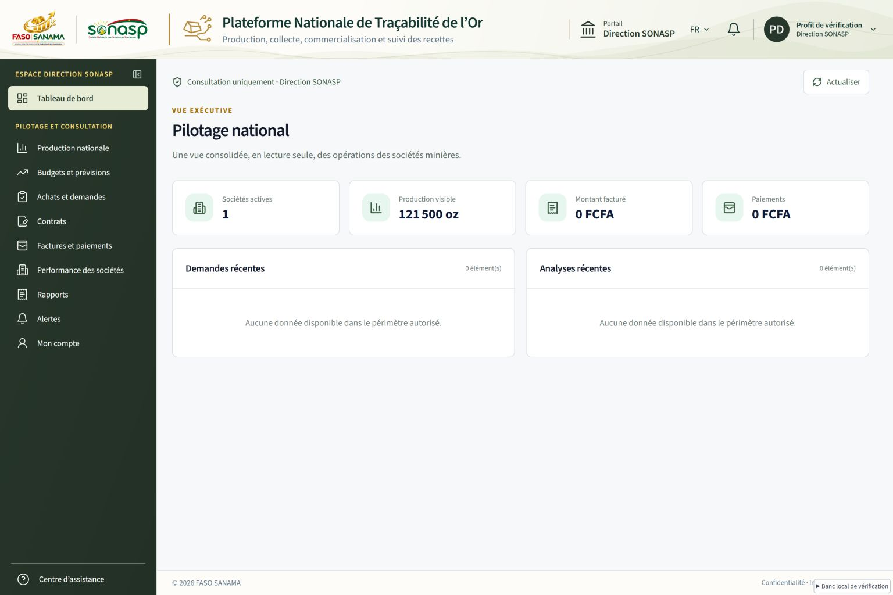
Vert olive
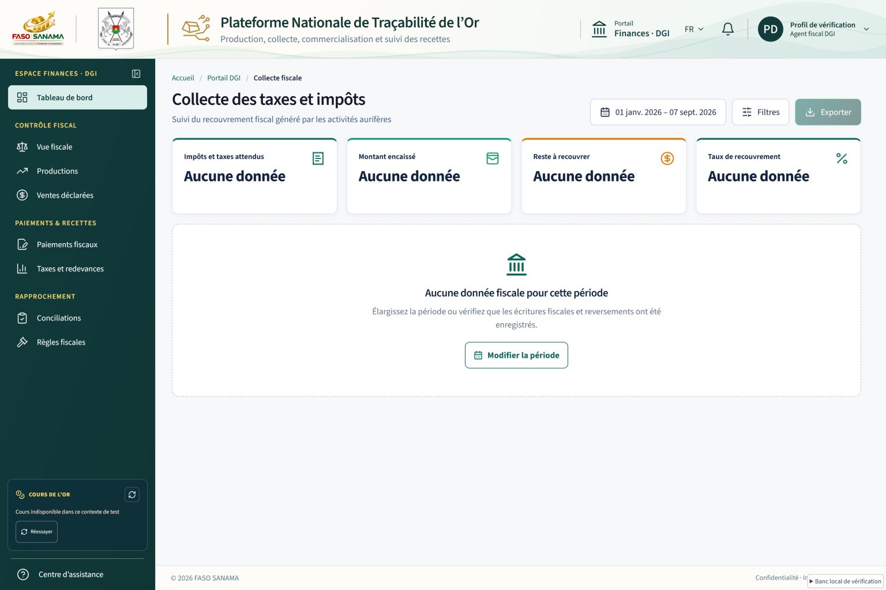
Vert pétrole
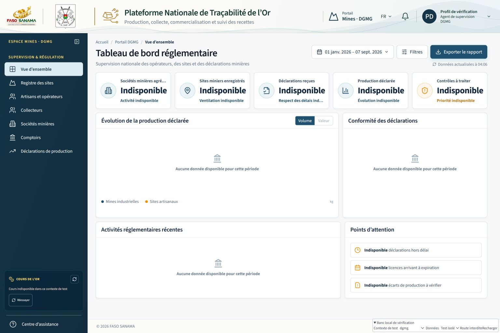
Bleu institutionnel
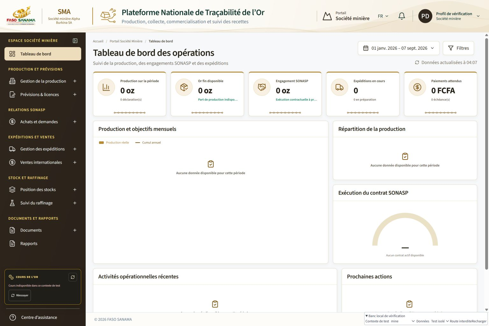
Brun et or · identité sans logo
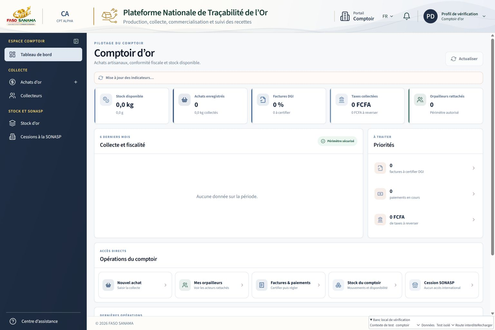
Bleu ardoise
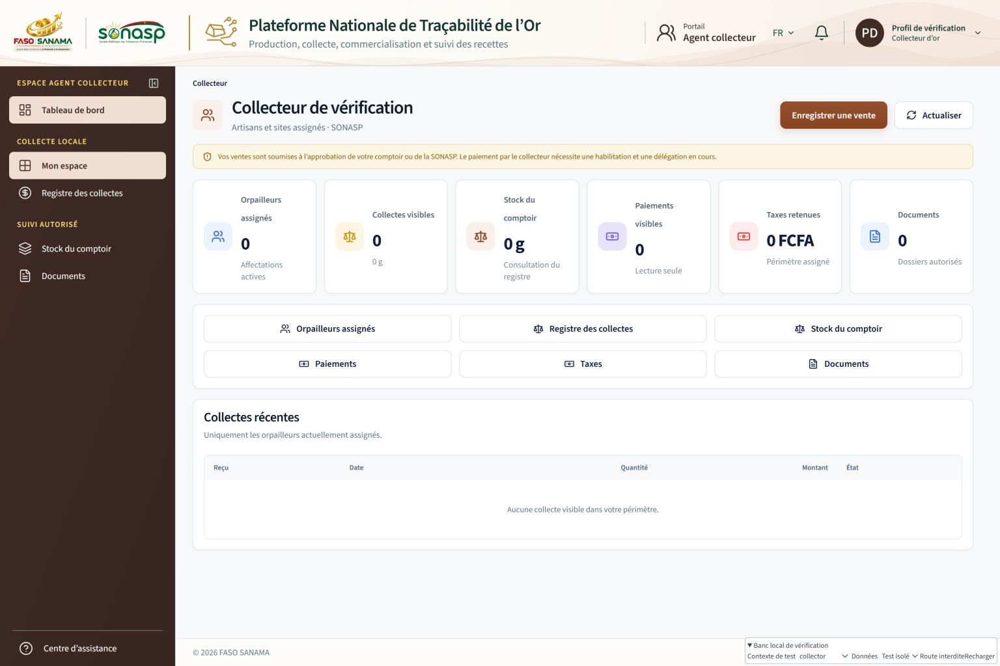
Cuivre
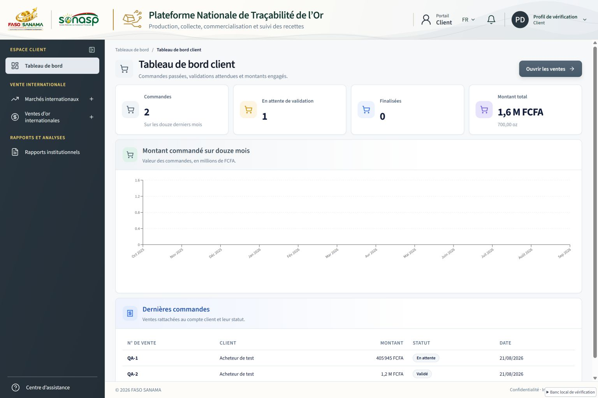
Gris bleu
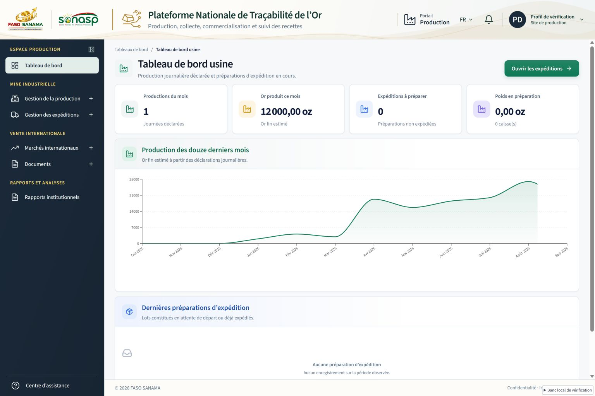
Palette existante harmonisée
Palette existante harmonisée
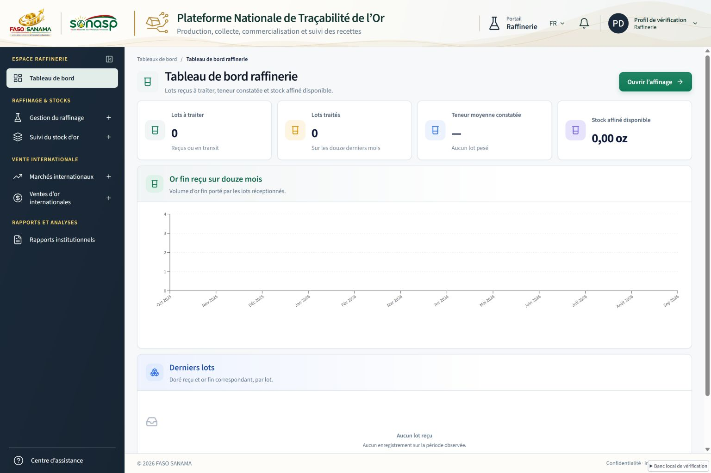
Palette existante harmonisée
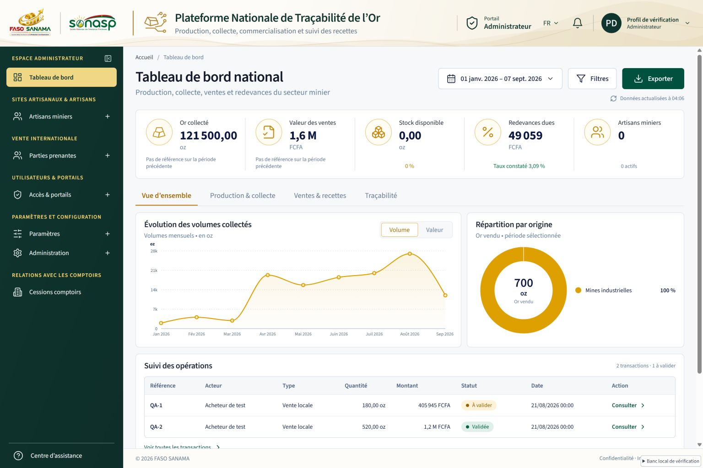
Même thème que owner
Second contexte, même portail
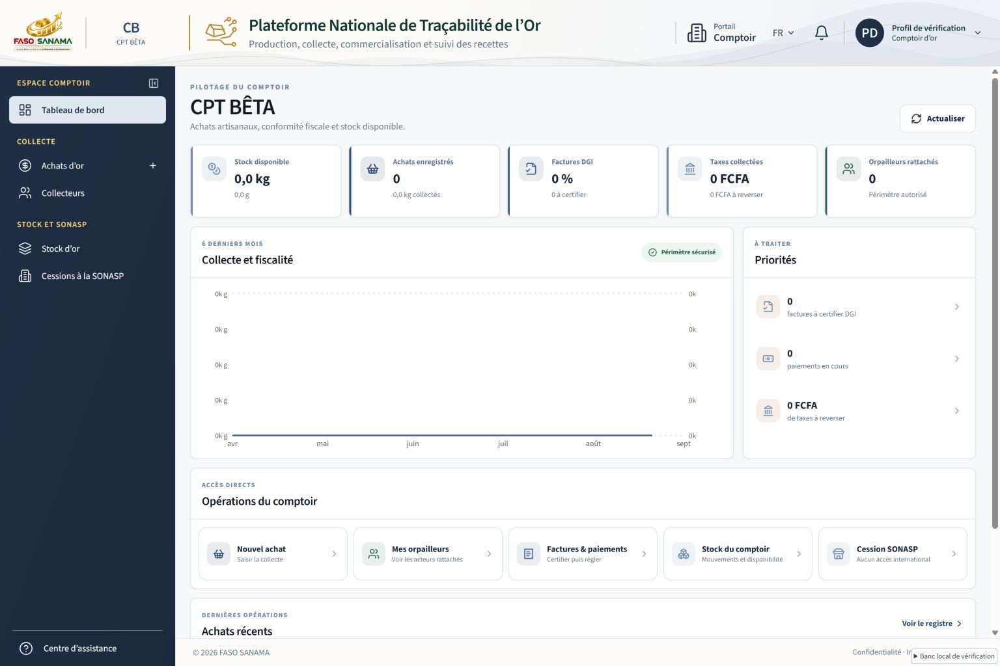
Second contexte, même portail